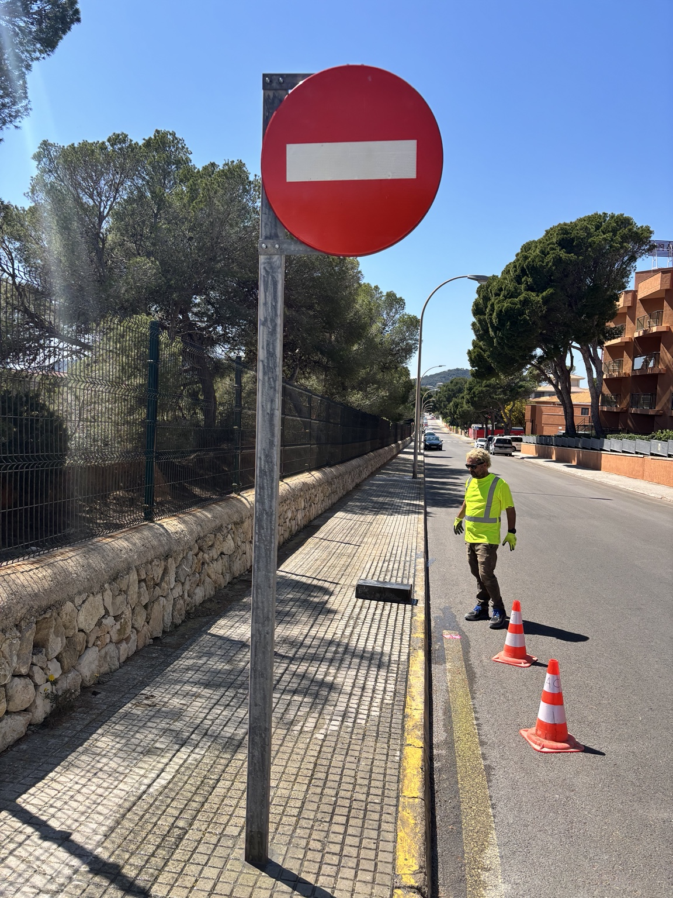

Portfolio de ejecución
Proyectos reales. Procesos documentados.
Una selección de trabajos ejecutados por nuestro equipo, desde las fases ocultas hasta el acabado final.

Obra nueva
Estructura y cimentación
Excavación, replanteo, encofrado, armado y hormigonado.
Ver proyecto →
Reforma integral
Reforma integral de baño
Alicatado, pavimentos, microcemento, ducha y remates.
Ver proyecto →
Cubiertas
Cubiertas y tejados
Impermeabilización, teja, encuentros, aleros y remates.
Ver proyecto →
Rehabilitación
Fachadas
Saneado, fisuras, revocos, pintura e impermeabilización.
Ver proyecto →
Piedra natural
Piedra y mampostería
Muros, cerramientos, revestimientos y detalles artesanales.
Ver proyecto →
Obra pública
Señalización y obra urbana
Drenaje, señalización, reparaciones y pequeñas obras civiles.
Ver proyecto →Obras reales